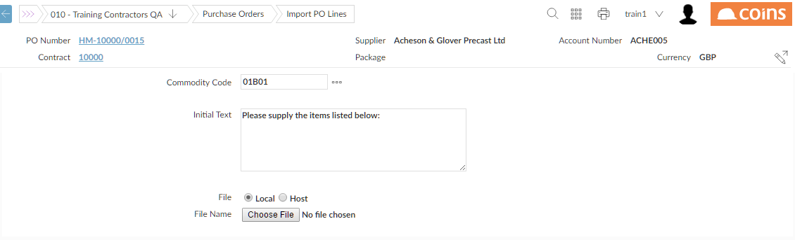
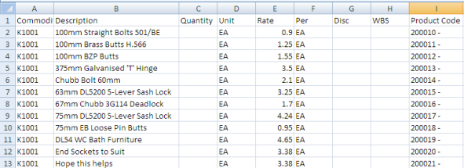

Importing Order Lines From Excel
Although features exist in for Template Orders (usually order type T), some users find it more convenient to retain the framework or manage the build-up of orders off-line. For instance, you may have material order schedules held in one or more spreadsheets.
In addition, if for example you know the 's product code, you can add this detail to the order.
Limitations
The import is not available for the following types of order: , asset, workshop, memo (specified by PO parameter POMEMTYP), lump sum, open orders (specified by PO parameters OPKTYPE, OPAGTYPE, OPENTYPE), orders (except that import is allowed on template orders where the Qty Class is "hidden" or "no hide"), subcontract orders which are not non-VAP matrix or schedule rate (specified by PO parameters SCNVPMTX, SCSORTYP).
To import order lines:
- Start entering a Material Order in the normal way.
You can also import order lines onto an existing order; click the  on the Material Orders browse.
on the Material Orders browse.
- Fill in the header details on the Main tab.
- From the Options menu, select Import Lines.
- Fill in details of the file that contains the lines you wish to import:

- Commodity code is the 'fill-in' code used for any lines on your spreadsheet which have no code. (This must be a valid commodity code in the environment you are importing to. It is not needed if all lines have a commodity code!)
- Initial text is used to create a simple text line as the first order line on the order.
- If you intend to take your file directly from your PC then choose "Local" option and browse for the file or enter the path and file name - ensuring that your path name is correct AND that the file in question is closed.
If, when importing from your PC, you get the error "File Does not Exist" - this is either caused by you not entering the PC File name correctly (which is why we suggest you always use the same one) or it may be a permission problem with your home directory.
- If you want to import from a file on the Host, select "Host" and enter the path and filename. Remember that file names are case sensitive.
- Click
 .
.
displays the message:
An Import PO Lines process is still running. Please refresh this page in 10-15 sec.
- Click
 to refresh the page and see the lines that have been imported.
to refresh the page and see the lines that have been imported.
When refreshed you should see your lines. If the order lines have not been imported, look at the PO Lines Import Results report on Report Status to find out why. Notice that the 's product codes (from the CSV file) are inserted at the front of the Description.
- The order can now be edited in the normal way.
Set up
There are no specific set-up requirements for this feature; however your spreadsheet for importing needs to be in CSV format with the following layout:
- The first row of the file is treated as caption headings.
- The remaining rows must have columns as follows:
- A: Commodity code (this can be blank, in which case the default commodity code will be used)
- B: Description (up to 720 characters; a row with only a description becomes a text line)
- C: Quantity
- D: Unit of Quantity (these must be codes)
- E: Price
- F: Per
- G: Discount
- H: WBS code (if you are not using WBS codes, you must still have a (blank) column for this)
- I: product code (optional)
- J: code (if you supply a non-blank value in this column then you must leave the Commodity Code blank)
- K: (optional)
- L: Resource code (only on -type orders)
- M: Original Order Item Number. This is optional and is used when importing lines; it is ignored when importing order lines for a new order. See below.
- N: Sales Code. This overrides any defaults from the commodity code.
(If the sales code in the import file is blank, then for -based orders (that is, , material, subcontract, uses the sales code from the cost code related to the commodity code; for non--based order (that is, overhead, workshop, ), uses the sales tax code from the order.)

Note: Even if you do not use certain items, like Discount, WBS and Product code they need to be present as empty fields.
Importing Lines
If you are importing lines for a , you can use either the product code or the item number on the original order to identify the lines on the original order to which the imported lines refer. If you are not using product codes or are using non-unique product codes, you must use the item number concept to apply changes to existing order lines.
If a value is specified in column M (Item Number), then will check that the value is unique to the CSV file. If it is not unique then an error is generated. If the value is unique then will attempt to find the order line with that item number. If no order line can be found then an error will be generated.
If no value is specified in column M, then will attempt to find the order line based upon the value in column I (the product code) if there is a value in column I. However, to find the order line this value must be unique to the order.
If no order line can be found then the assumption is that a new order line is being added to the .